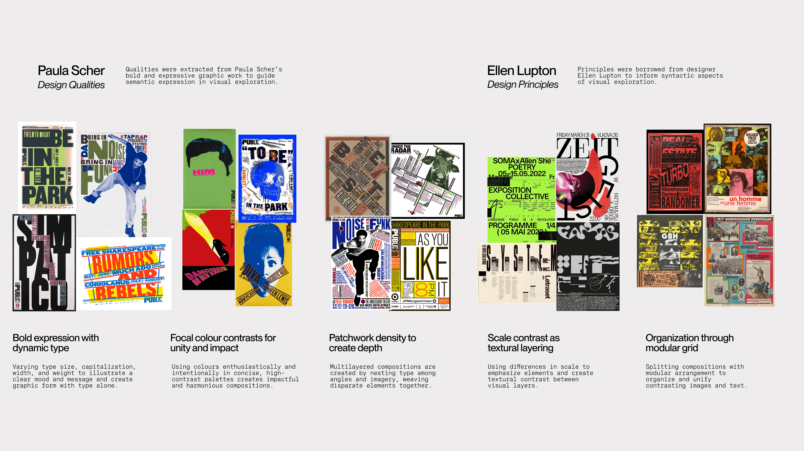
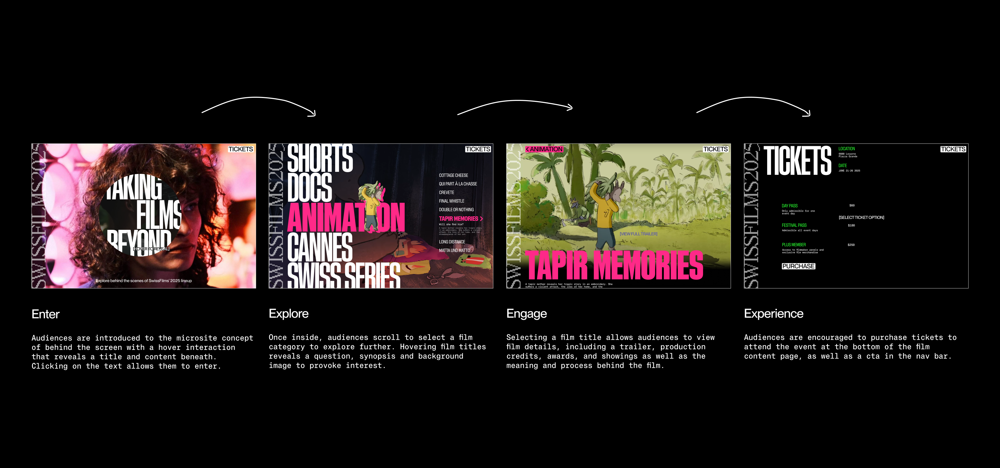
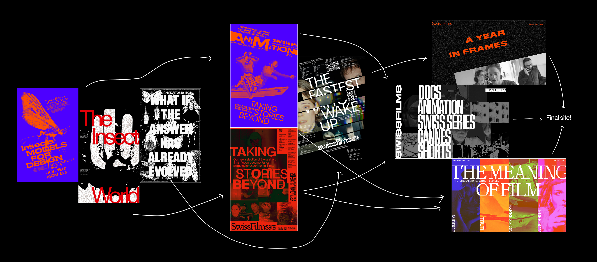
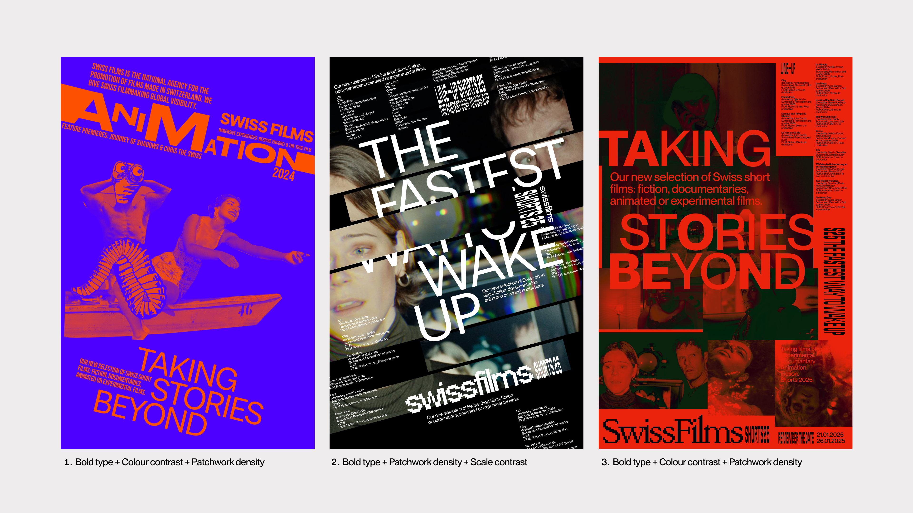

Project Overview
Beyond the screen. Behind the films.
A pre-event microsite designed for SwissFilms 2025. The site delivers a story-driven experience that takes users "behind the screen" and communicates the value of attending the festival. The final direction was shaped through research into precedent designers work, analysis of existing websites and collaborative visual exploration.
The Client
SwissFilms is a nonprofit organization focused on the promotion of Swiss filmmaking to domestic and global audiences. They act as a liaison between filmmakers and film festivals, providing promotion and distribution for independent Swiss films at festivals worldwide.
SwissFilms 2025 is an annual festival featuring a lineup of independent Swiss films across shorts, documentaries, animation and fiction, held from June 21-26, 2025 at Piazza Grande in Locarno.
Problem Statement
How might we translate the depth, emotion and intent behind independent Swiss films into a compelling digital experience that captures audience interest before the event and encourages them to attend SwissFilms 2025?
Research Methodology
Research focused on identifying key design qualities and principles from precedent designers and cultural microsites to form visual and interaction decisions. Additional reference sites were analyzed for their narrative and interactive approaches, while the full SwissFilms 2025 lineup was reviewed to understand content hierarchy and uncover opportunities for audience engagement.

Design Solution
Enter. Explore. Engage. Experience.

Key Interactions
Throughout the entire site, a custom cursor indicates calls to action. Each interaction was designed to echo a cinematic reference.
01 Hover to Reveal Entry
A hover interaction uncovers the site title and trailers beneath film stills, creating an exploratory entry experience that sets the tone of going behind the screen.
02 Film Reel Scroll
Film genre sections are organized in a typographic stack that users scroll through to select, emulating the motion and rhythm of a spinning film reel.
03 Vertical Scroll Structure
The vertical scroll introduces each film page with lighter, familiar content such as the trailer, title, synopsis, credits, awards, and reviews, creating an easy entry into the film world.
04 Horizontal Scroll Narrative
A horizontal scroll extends the storytelling experience by shifting focus into deeper narrative layers, revealing the director's perspective and production journey, mirroring cinematic flow and the idea of memory unfolding in stages.
Design System
Typography. Staff XX Condensed is used for titles to command attention, referencing the condensed text seen on film posters. Neue Montreal is used for calls to action for its clean functionality. Neue Montreal Mono is used for body content to evoke a narrative, script-like effect.
Imagery. Full-bleed, clear film imagery creates emotional impact and highlights the lineup. Reduced opacity imagery is layered under text to provoke interest.
Colour. Colour differentiates content categories - bright colour-coding applied to film genre sections and ticketing creates clear visual cues that would also translate to physical event assets and wayfinding.

SwissFilms 2025 Design System
Process
An iterative 4-week process moving from poster exploration to visual identity to microsite concepts to final deliverable.
Poster Exploration
Initial visual exploration through poster-making to establish a design language - experimenting with bold type, colour contrast and patchwork density inspired by Paula Scher.
Visual Identity
Three visual identity lines were developed and evaluated - each exploring a different combination of design qualities from the precedent research.
Microsite Concepts
Three microsite directions emerged - a post-event retrospective, a pre-event lineup site, and a post-event personal histories exploration.
Final Microsite
The final microsite combines all three lines into a pre-event site allowing audiences to explore the lineup, discover films and purchase tickets.

Design Process Overview

Visual Identity Exploration

Microsite Concept Development
My Reflection
This project pushed me to think beyond usability and into emotional expression. The challenge was translating the meaning and care behind independent films into a structured digital format that still felt exploratory and cinematic.
Working through an iterative process - from posters to identity to microsite - taught me the value of building on ideas incrementally. Each week's output directly informed the next, and the final site felt genuinely coherent because of that process.
Studying Paula Scher and Ellen Lupton grounded our decisions in design thinking rather than personal preference, which gave our team a shared vocabulary and made collaboration more focused and intentional.